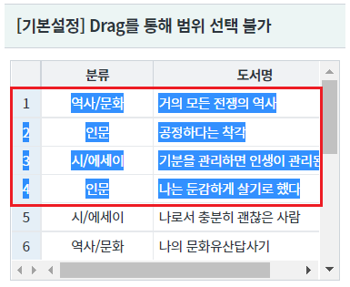
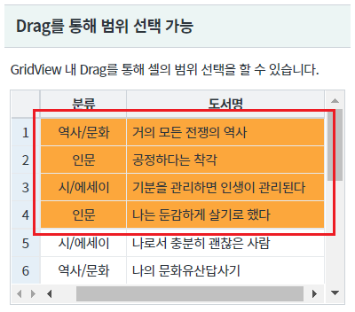
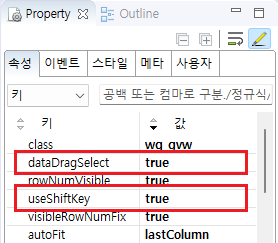
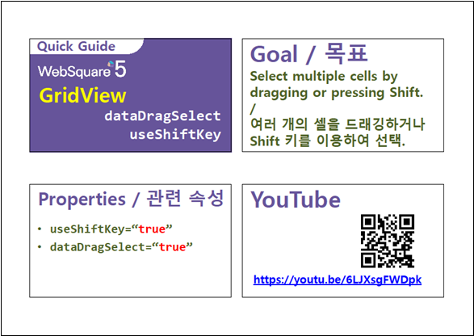

GridView 내에서 Drag를 통해 셀의 범위 선택을 기능을 제공하는 예제입니다.
[기본설정] Drag를 통해 GridView 셀의 범위 선택 불가
Drag를 통해 GridView 셀의 범위 선택 허용
GridView 내의 셀이 Drag를 통해 범위 선택이 되지 않음을 확인합니다.
셀의 문자가 선택됨을 확인합니다.
[브라우저(Chrome) 실행 예시]

GridView의 셀이 선택됨을 확인합니다.
[브라우저(Chrome) 실행 예시]

GridView와 연결된 DataList 생성 및 연결 방법은 생략되었습니다.
GridView의 속성을 정의합니다.
[필수] dataDragSelect="true" //[default:false, true] 여러 개의 셀들을 드래깅으로 선택. useShiftKey 속성을 사용할 때 유효하며, dataDragDrop 속성과 함께 사용할 수 없음.
[필수] useShiftKey="true" //shift key를 이용하여 복수 셀의 선택에 대한 적용 여부.
그림 1.웹스퀘어5 SP5 스튜디오의 Property View(속성창) 예시

[소스 코드 예시]
<!-- gridView 의 소스 본문 예시 --> <w2:gridView dataDragSelect="true" useShiftKey="true" dataList="data:dlt_books_2"> <!-- 중략 --> </w2:gridView>
dataDragSelect
useShiftKey
[웹스퀘어5 SP5 개발 가이드] GridView
링크 : https://docs1.inswave.com/sp5_user_guide/86bdcf48029b958b
[웹스퀘어5 SP5 개발 가이드] GridView 행 드래깅
링크 : https://docs1.inswave.com/sp5_user_guide/86bdcf48029b958b#146e3c43f7e89d7e
[웹스퀘어5 SP5 개발 가이드] GridView 드래깅 및 Shift 키를 통한 셀 선택
링크 : https://docs1.inswave.com/sp5_user_guide/86bdcf48029b958b#a424a8d7a556c5aa
GridView 드래깅 및 Shift 키를 통한 셀 선택
링크 : https://youtu.be/6LJXsgFWDpk
